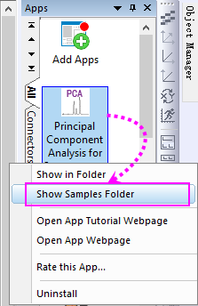
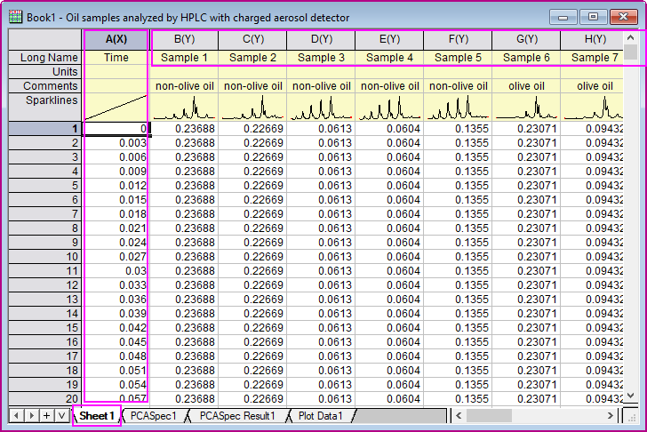
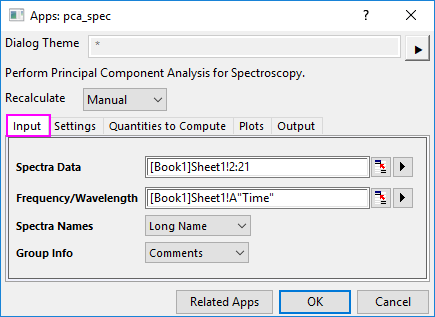
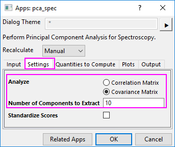
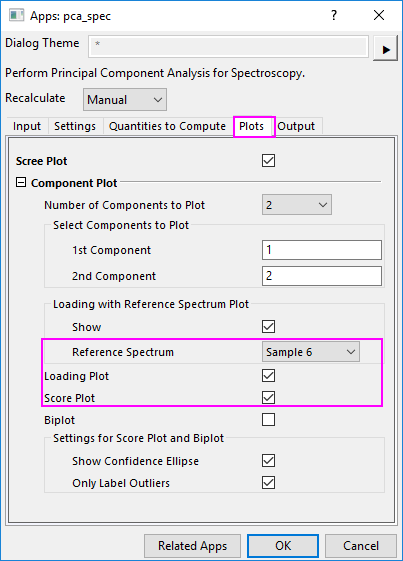
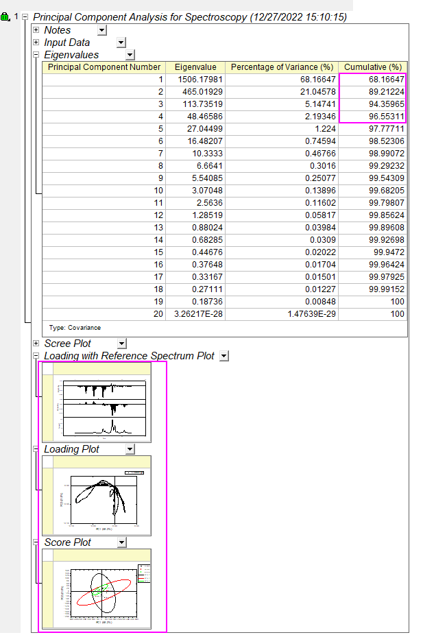
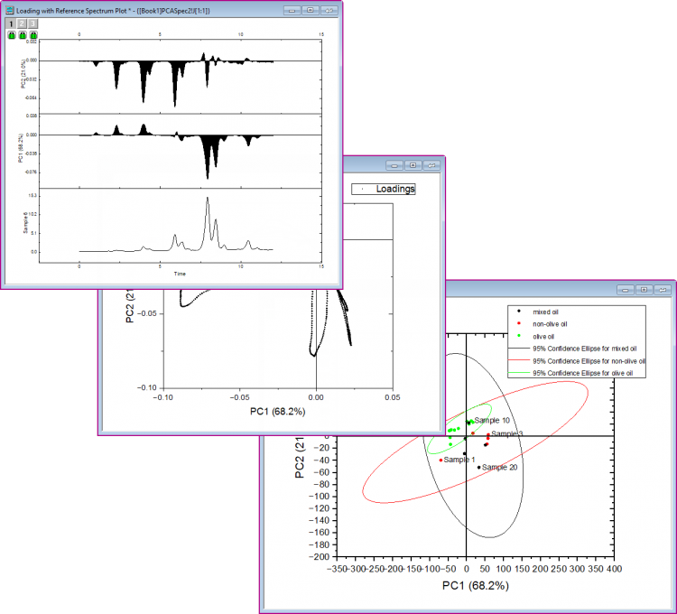

分光法における主成分分析(Pro)
PCA-Spec
概要
この分光法における主成分分析（Principal Component Analysis for Spectroscopy）アプリは、スペクトル（IR、蛍光、UV-Vis、ラマンなど）の主成分分析を実行するために使用されます。
チュートリアル
- 分光法における主成分分析（Principal Component Analysis for Spectroscopy）アプリアプリをインストールしてから、このチュートリアルを開始します。このアプリをインストールしていない場合は、アプリギャラリーのアプリを追加ボタンをクリックしてアプリセンターを開き、このアプリを検索してインストールします。
- このアプリのアイコンを右クリックしてサンプルフォルダを開くを選択し、サンプルファイル"PCASpecEx.opj"を探します。ファイルをOriginにドラッグアンドドロップして開きます。

- 開いたプロジェクトでは、最初のシートがソースワークシートです。このシートには20個の油試料のスペクトルと、周波数データを格納する「Time」列が含まれています。

- 2列目から最後の列までを選択します。アプリギャラリーウィンドウのｖ分光法における主成分分析（Principal Component Analysis for Spectroscopy）アイコンをクリックしてダイアログを開きます。ダイアログの入力タブで、Sheet1のX列を周波数/波長として選択します。他のすべてのY列がスペクトルデータとして選択されます。スペクトル名にロングネームを設定し、グループ情報としてコメントを使用します。

- 設定タブで、分析として共分散行列オプションを選択します。抽出する成分の数を10に設定します。共分散行列オプションを選択すると、20個のサンプルの各行が正規化されます。

- プロットタブに移動し、Sample6を参照スペクトルプロットを含むローディング内にある参照スペクトルを選択して、ローディングプロットとスコアプロットにチェックを付けます。

- OKボタンをクリックすると、レポートシート、結果シート、およびプロットデータシートが作成されます。レポートシートの固有値表からは、最初の4つの主成分が分散全体の96%を説明していることがわかります。参照スペクトルグラフ付きのローディンググラフ、ローディングプロット、スコアプロットが作成され、レポートシートに表示されます。

- プロットをダブルクリックすると拡大し、詳細を確認できます。
